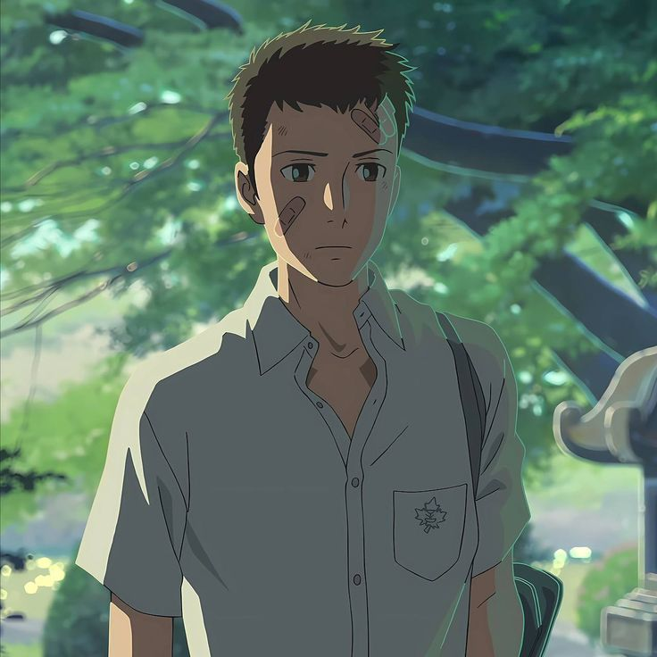
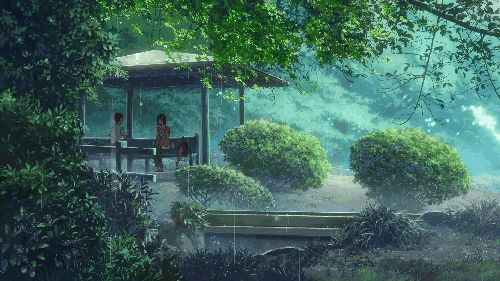
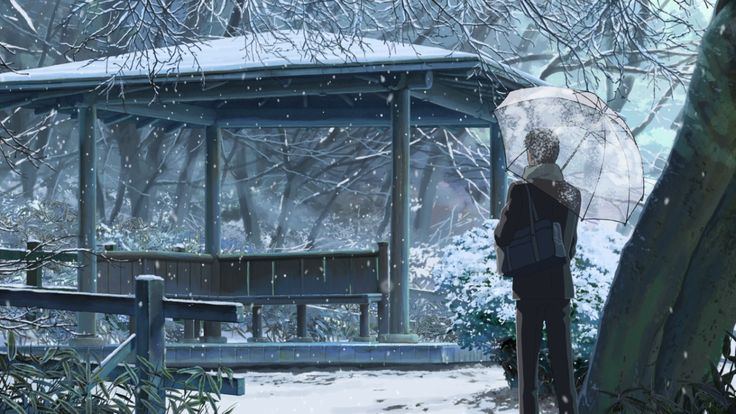
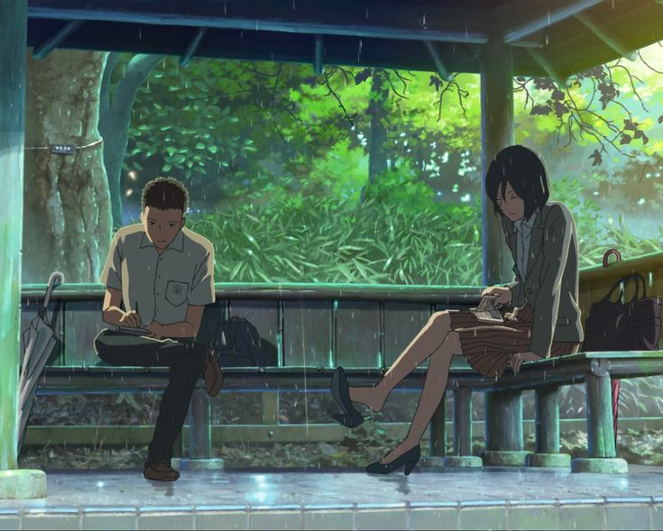

✦
Anime Cinema Universe
✦
 - Makoto Shinkai.jpg)
Kotonoha no Niwa
🎬 Sutradara: Makoto Shinkai
📅 Tahun: 2013
⏱️ Durasi: 46 menit
🎵 Musik: Daisuke Kashiwa
🏆 Rating: ★★★★★ 8.2/10
📊 Box Office: ¥1.5 miliar
🎞️ Studio: CoMix Wave Films
📍 Lokasi: Shinjuku Gyoen, Tokyo
The Garden of Words menceritakan kisah Takao Akizuki, seorang siswa SMA berusia 15 tahun yang bercita-cita
menjadi pembuat sepatu. Setiap pagi saat hujan, dia membolos sekolah untuk mendesain sepatu di taman Shinjuku Gyoen.
Di taman itulah dia bertemu dengan Yukari Yukino, seorang wanita misterius berusia 27 tahun yang selalu datang
dengan sebotol bir dan cokelat. Meski jarak usia mereka terpaut 12 tahun, mereka menemukan kedamaian dalam
kesendirian masing-masing. Takao tidak tahu bahwa Yukino sebenarnya adalah guru bahasa Jepang di sekolahnya
yang sedang mengambil cuti karena diintimidasi oleh murid-murid.
Saat musim hujan berakhir, rahasia mereka terbongkar. Hubungan khusus yang terbangun di bawah rintik hujan
harus menghadapi kenyataan dunia nyata. Film ini menggambarkan keindahan dalam kesendirian, arti sebenarnya
dari kedewasaan, dan bagaimana dua jiwa yang terluka dapat saling menyembuhkan.
Dengan durasi hanya 46 menit, The Garden of Words membuktikan bahwa kisah mendalam tidak membutuhkan waktu
panjang, hanya hati yang terbuka untuk memahami.
"Aku ingin menjadi lebih baik. Lebih baik lagi. Agar ketika bertemu lagi, aku bisa menjadi versi terbaik dari diriku."
- Takao Akizuki, The Garden of Words

(秋月 孝雄)
15 tahun
Siswa SMA yang memiliki passion mendalam dalam membuat sepatu. Pemalu, tekun, dan penyendiri. Sering membolos sekolah di pagi hari saat hujan untuk mendesain sepatu di taman. Impiannya adalah menjadi shoemaker profesional. Keluarganya tidak harmonis, membuatnya lebih suka menyendiri.

(雪野 百香里)
27 tahun
Guru bahasa Jepang yang sedang mengambil cuti karena mengalami bullying dari murid-muridnya. Sering menghabiskan waktu di taman dengan bir dan cokelat. Memiliki kepribadian misterius dan melankolis. Meski tampil tenang, dia sebenarnya sedang berjuang dengan depresi dan rasa tidak aman.


